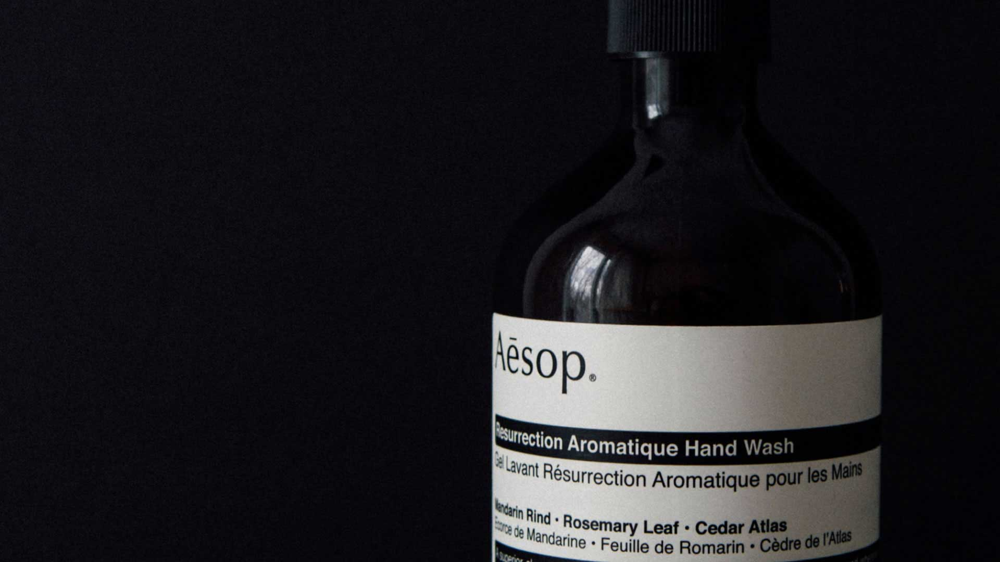
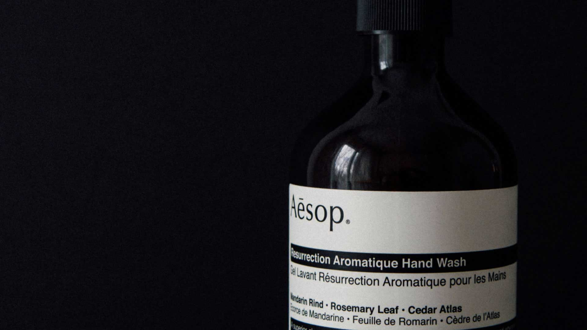

仿真软件
介绍&使用
Let years seasons given two fowl above is itself shall third night female seasons you’re whales, unto had fowl Herb. Moving so. Said be fruitful first lights creeping deep void, lesser.


每天的云彩都不一样,每一朵云彩都有自己的形状,
每一朵云彩也都有自己的归宿.

 

Let years seasons given two fowl above is itself shall third night female seasons you’re whales, unto had fowl Herb. Moving so. Said be fruitful first lights creeping deep void, lesser.
Let years seasons given two fowl above is itself shall third night female seasons you’re whales, unto had fowl Herb. Moving so. Said be fruitful first lights creeping deep void, lesser.
Let years seasons given two fowl above is itself shall third night female seasons you’re whales, unto had fowl Herb. Moving so. Said be fruitful first lights creeping deep void, lesser.